Kitserver 5.4 is an add-on program for Pro Evolution Soccer 5, Winning Eleven 9, and Winning Eleven 9 Liveware Evolution. It is a loader and manager for various modules. Kserv Module provides the alternative way of managing players and goalkeeper kits outside of the game's AFS file: you organize the PNG or BMP kit images into an external database, which is basically a collection of folders and files that follows few simple rules. You are not restricted to just 1st and 2nd kit for each team - you can have as many as you like. The BallServer Module does similar things to Kserv: it offers the possibility of chosing a ball from the external database. Of course it is possible to store more than the eight standard balls. Another extension is the Faceserver Module. As the name says, it allows to use more faces and hair from an external database without overwriting existing ones. With StadiumServer, you can choose additional stadiums from your GDB. Furthermore the LOD Mixer Module enables more detailed graphics and controlling of match aspects in Leagues and Cups.
Some additional modules were backported from later versions of Kitserver: Bootserver allows to assign each player personalized boots from GDB. AFS2FS module allows you to organize your patches into folders and files, instead of inserting them into AFS-files. This way, you can quickly add/remove patches, and also never worry about needing to re-build AFS, because of lack of space for a particular BIN. There is also a Speeder module - to alter the game speed (increase/decrease). And the last new addition is the Network module, which provides easy means of configuring which network server to connect to and automatic roster updates.
As usual: copy the entire kitserver folder into your game folder, so that the directory structure looks like this:
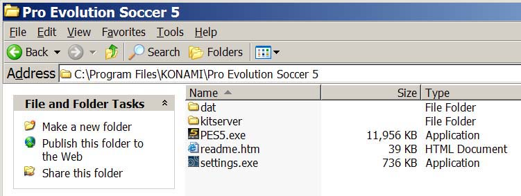Go to kitserver folder and run setup.exe. The "PES5.exe" in the drop-down list should be pre-selected, so just press "Install" button. The kitserver should show a message box saying that the installation was successful. (If you get an error message, make sure that you not currently running the game, and that the PES5.exe file is not marked as read-only)
For information how to disable/re-enable individual modules, see "Advanced Configuration" at the bottom of the manual.
Go to kitserver folder and run setup.exe. The "PES5.exe" in the drop-down list should be pre-selected. (Select it, if not so). Press "Remove" button. The kitserver should show a message box saying that the uninstallation was successful. You can now delete the whole kitserver folder, if you want. (Or you can leave it there - it won't do any harm, and you'll be able to quickly re-enable kitserver later, if you run setup again and press "Install" button.)
So we start with the GDB, as the most dramatic change of way kitserver works (compared to version 5.0). The GDB contains a folder named uni, which is responsible for storing the team kits (uniforms). The single most important file inside uni is called map.txt. This file tells kitserver where to find the kits for particular team. As you know, each team has a unique id - a integer number from 0 to 201, i think (+ some extra all-star teams). So for every team in the GDB, you must specify in the map.txt, where the kits are for this team. Here is an example:
# This config maps team number into folder name # Format: <team-num>,"<folder name>" # Example: 21,"Russia" 8,"National\France" 9,"National\Germany" 65,"EPL\Aston_Villa" 75,"EPL\Man Utd" 77,"EPL\Newcastle" 80,"EPL\Tottenham" 170,"La Liga\Real Madrid"
Please note that the sample GDB (provided with kitserver) is just one possible way of organizing the teams and folders. It uses "EPL" folder to group all english teams, "National" - to group all national teams, and so for. You may find that you just prefer a flat list of folders - without these extra groups. In that case, just modify the map.txt file accordingly, and create the structure of folders that you prefer. That's the main advantage of having map.txt - the flexibility of kit organization.
You can see from map.txt above that in order to find a kit for team #8, the kitserver needs to go to the folder GDB\uni\National\France. This folder will contain all of the kits that are available to team #8. Inside it, you must create an individual folder for each kit. Like this: 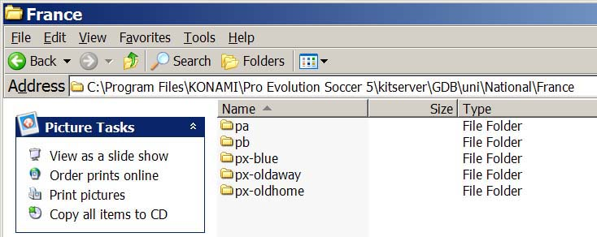 For players, 1st kit must have a folder name pa, 2nd - pb. Extra kits can have any folder names that start with letter "p". I found it useful to prefix all extra kits with px-. For example, px-blue. For the goalkeepers, 1st kit must be in the folder ga, 2nd - in the gb. Extra kits can have any folder names that start with letter "g".
Now let's move on inside one of the kit folders. Take pa, for example. 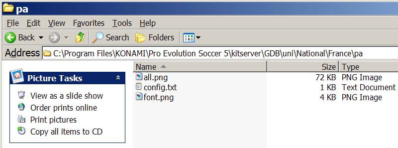 This is how you folder will look, if you have a so-called "all-in-one" kit, meaning that it's not split into separate parts: shirt, shorts, and socks. Kitserver can successfully work with split kits and all-in-one kits, as it would automatically split the all-in-one kit at runtime if you are mixing parts.
Generally there is no problem using all-in-one kits. Anyway you may want to use split kits when you don't have all the parts or want to add a single part and not a whole kit because you already have that shirt and you don't want it to appear twice in Strip Selection. For example, see Newcastle's px-away2 folder: it doesn't have the all.png, but instead contains shorts.png and socks.png. Notice that there is no shirt.png in there, which is totally fine: the kitserver will just use the shorts and socks, and take a shirt from a different folder.
So, to summarize: Having the all.png is equivalent to having these three: shirt.png, shorts.png, and socks.png. (Generally, you shouldn't have all four of them, or all.png and say shirt.png - this will quickly become confusing.)
| Reserved PNG file name | Reserved BMP file name | Meaning |
|---|---|---|
| all.png | all.bmp | all-in-one kit |
| shirt.png | shirt.bmp | shirt |
| shorts.png | shorts.bmp | shorts |
| socks.png | socks.bmp | socks |
| font.png | font.bmp | 256x64 image with font for displaying player names on the back of the shirt |
This is the attribute configuration file (in previous Kitservers it was called "attrib.cfg"). As before, it is just a plain text file - you can use Notepad or any other text editor to view or modify it. For each folder that has shirt or shorts in it (either as part of all-in-one kit, or as separate image) should have a config.txt file in it. Most of the attributes apply to the shirt, except for "shorts.number.location", which applies to shorts. That's why you would still need a config.txt in a folder, which doesn't have a shirt image, but has shorts. Additionally the attributes "description" and "mask" refer to all parts.
Here's the summary table of all the supported attributes:
| Attribute name | Meaning | Format | Example |
|---|---|---|---|
| model | identifier for 3D-model of the shirt | decimal integer | |
| collar | Presense of collar | yes/no | |
| numbers | Filename (with path, relative to kit folder) of the image that contains numbers texture: 256x128 4bit/8bit paletted image | string in double quotes | |
| shorts.num-pal.X | Filename (with path, relative to kit folder) of the image that contains numbers palette: a 4bit/8bit paletted image. This is the palette that will be used for the shorts from kit folder "X", if such shorts are used with the current shirt. | string in double quotes | |
| shorts.number.location | Where on the shorts the number should be placed. ("off" means the number will not be displayed at all.) | left|right|both|off | |
| name.location | Where on the shirt the name of the player should be placed. This is useful for teams like Boca Juniors, who have player names printed at the bottom of the shirt. ("off" means the name will not be displayed at all.) | top|bottom|off | |
| logo.location | Where on the shirt the sponsor logo should be placed. (This attribute is probably not gonna be very useful with kitserver, since if the team has the logo on the back of the shirt, it will probably be painted as part of the kit texture itself, by kitmaker) | top|bottom|off | |
| name.shape | Indicates whether the name should be curved or straight. The values have the same meaning as in Edit Mode: type1 - straight, type2 - slightly curved, type3 - curved. | type1|type2|type3 | |
| radar.color | This attributes specifies the color you see on the ingame radar. It also influences the kit that is selected by default after selecting teams, as PES5 uses it as an indicator whether two kits have similar colors and would be too confusing together. Be careful: This is also the main color of standard mini-kits (not 2.5D)! | color, written in hexadecimal format RRGGBB (red,green,blue) | |
| description | Here you can specify the name of the kit. This will be used for kit information, which is explained later. | string in double quotes | |
| mask | This is the mask file that will be applied when splitting the kit for mixing parts. You only need this if the splitting rules are non-standard (see the notes for kitmakers if you need more information) | string in double quotes |
For examples of shorts.num-pal.X usage - study the sample GDB: it contains many different examples. Initially this may look too complicated; however, after a bit of time, it will become clear why this kind of organization was needed: In order to be able to freely mix the parts of the kits, you need to be able to specify what sort of numbers and palettes should be used on shorts in many different situations. For example, consider the config.txt from Germany "pa" folder:
model = 37 collar = no numbers = "..\..\adidas_black.png" shorts.number.location = left shorts.num-pal.pa = "..\..\adidas_white.png" shorts.num-pal.pb = "..\..\adidas_black.png"
What this means in plain English is the following:
For the shirt use Adidas numbers (black). When this shirt is used with "pa" shorts, then
apply palette file "adidas_white.png", which effectively renders white numbers on the shorts.
When this shirt is used with "pb" shorts, then apply palette file "adidas_black.png", which
results in black numbers being drawn on the shorts.
In order to provide a visual reference for currently selected GDB kits (including extra kits), these so-called "2.5D" kits are overlayed on top of the KONAMIs mini-kits. The name originated from the fact that these are 2Dkits, but they are built with the real textures that are used in the match. Here's a screenshot: 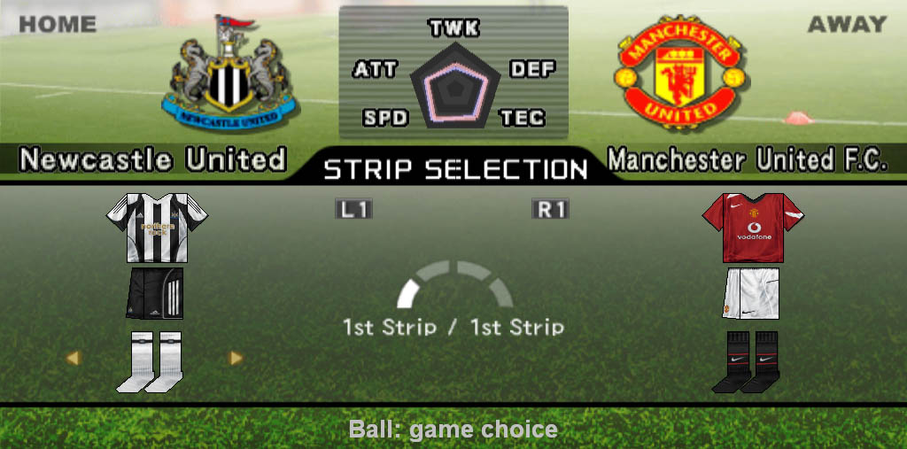 (When the team doesn't have the kits in GDB, the original KONAMI mini-kits will still be visible.)
You can switch between 1st/2nd kits as before - using your keyboard or gamepad - whatever you have configured. In order to get to the extra kits, press "O" button - to enter "Change Setup" mode. The little yellow arrows will now move the individual parts of the kit, signalling that you can start mixing individual parts. This is all standard game functionality - you don't need to press any special hotkeys to activate that.
Now comes the Kitserver new feature: by switching to different shirt(shorts,socks) you will now be cycling through all available parts, and not just 1st and 2nd choices. In version 5.2.3 you can now cycle in both directions.
It is also possible to set goalkeepers kits. There are now 2 modes of kit selection: "Player mode" and "Goalkeepers mode". You can switch between them by pressing [Tab] key. For goalkeeper, choose the kits the same way as you did for the players. As with player kits, you can mix the parts, if you go into the "Change Setup" mode.
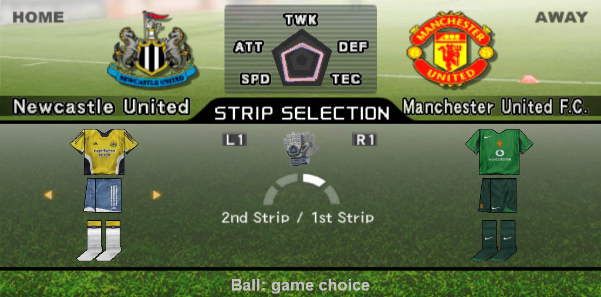Right under the kit preview additional information is displayed. Since there is not enough space, these are split in some pages between which you can switch withe the [PAGE UP] and [PAGE DOWN] keys. On the picture you can see the page called "Kit information". It shows the names of the selected kit parts which can be specified with the "description" attribute. The name is used for all kit parts in that folder. If nothing is specified the foldername will be used or in case of the four standard kits (pa, pb, ga and gb) the name "Standard [Home/Away]". As you can see this display is the second one in standard configuration, so you have to switch to it before.
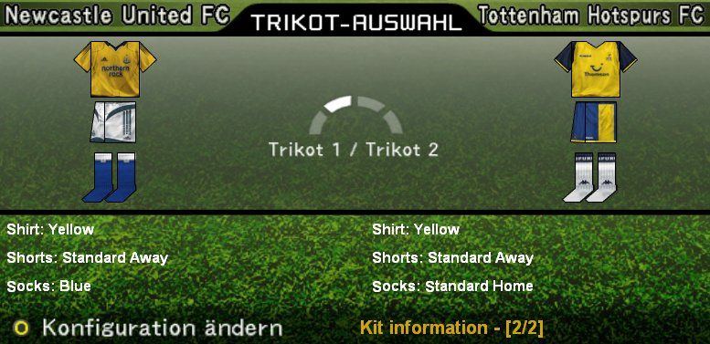
One of the most important changes in version 5.2.1 is HDPES. It means that you can use much better kits now since there is no more restriction of texture size and color depth. For example 1024x512 or 2048x1024 pixels big textures can be used now as long as the aspect ratio is 2 to 1 and the width is 512 multiplied with an integer. All parts are resized in a proportional way, so the texture should look like before wenn you zoomed in. Furthermore you don't need to care about annoying shared palettes anymore as the pictures can have more than 256 colors. Accepted are 32 bit images such as a PNG file with alpha channel and 24 bit images. For the last one Kitserver looks for a 256 color image in the same dimensions which is called like "all-alpha.png" or "shirt-alpha.bmp". If found, the palette index is taken as alpha value of the pixel at the same place in the texture. You can find a sample palette named "alpha.pal" in the kitserver folder. If you use that, black with an index of 0 will stand for full transparency and white with index 255 for complete opaque. If no alpha file is found, all pixels are taken as opaque.

Something that's also important is the splitting into the individual parts. As before this happens with masks,
but the format has changed. Now all three parts are saved in one file and marked with the colors red (shirt),
blue (shorts) and yellow (socks). By default the "mask.png" in the uni\masks folder ist used. However,
since Juventus has two individual socks you need a changed mask. This can be specified with the "mask" attribute
and is then searched for first relatively to the folder holding the config.txt and then in the "masks" folder.
The mask of the shirt is always used for all parts.
Nevertheless, in spite of all these changes you can still use your existing GDB since all textures are resampled
internally to 32 bit so that you can even mix all kit parts, independant from palette and color depth.
Also combinations of different texture sizes are allowed. It is only important that you copy the "masks" folder,
otherwise splitting will not work.
Ballserver uses the same GDB folder as the other modules like Kitserver. The subfolder is named balls. You'll notice that there is a file inside called map.txt (like in Kitserver) to configure the balls. The format is quite simple: one line is one ball, and there are three attributes. The first one is the name displayed in the ingame selection, followed by the name of the 3D model file and the texture file. Look at the example:
# This is the configuration file for Ballserver # Format: "<name displayed in game>","<model file>","<texture file>" # Example: "adidas Finale Capitano Grey","ariel_mdl.bin","adidas_finale_capitano_grey.bmp" # Texture paths are relative to GDB\balls\, model paths to GDB\balls\mdl\ # adidas "adidas Finale Capitano Grey","ariel_mdl.bin","adidas_finale_capitano_grey.bmp" "adidas Teamgeist Blue","gwidon_mdl.bin","adidas_teamgeist_blue.png" # Nike # Puma # This comment makes sure you have pressed the enter key after the last ball
Please don't forget the quotes, they are important! If your map.txt looks like this (and you have those files, of course), you can choose between adidas Finale Capitano Grey and adidas Teamgeist Blue in game later. The texture files have to be stored inside the "GDB\balls" folder and the models in "GDB\balls\mdl".
When downloading balls, you will recognize that quite a lot of balls share one 3D model. In this case, you need each model file only once. In general, models are independent from the texture size, so a model delivered with a 256x256 texture should work with a 512x512 texture as well. If you're unsure, just try it with different models.
Start the game just as usual. When you come to Strip Selection, you will see a new text under the mini-kits saying "Ball: game choice" by default. In this case, you will recognize no change when playing as the ball you selected in the options will be used. Now comes the new feature: press B on your keyboard to select the next ball (or V to cycle back). The text will change into "Ball: <name configured in map.txt>" and if everything is well-configured, you will play with that ball. To choose a random ball, press R and to reset the ball to game choice press C. Under the text you can see a 3D preview. It doesn't need any configuration or additional files in the GDB as it is created from the texture and the model file defined in your map.txt. 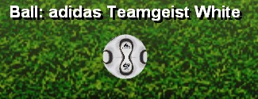 If you don't see the text, you have to navigate to it. The text at the bottom should say "Ball selection" then. 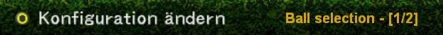
Faceserver is similar to Kitserver and Ballserver, making it possible to load as much extra faces and extra hair from the GDB as you want. Thanks to some changes to the internal logic (again), faceserver doesn't have any more problems with cut-scenes (such as substitutions) and edit mode. Please notice that faceserver depends on the player ids. As these aren't saved with replays and a team you can export from the master league, it can't work in these situations. A new module to fix this is already under development, but not finished yet.
As a result of the changes you can go to edit mode now to see how the faces look. In fact you should do this before and after inserting a new face as there are three new displays at the upper right.
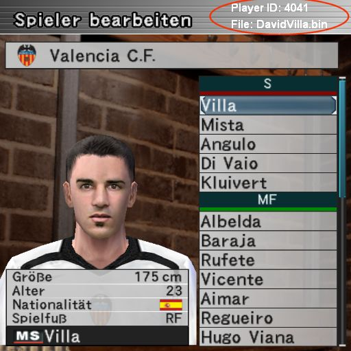The sample face of David Villa was made by Chris79. The player's id is the one that you can
also find in PlayerList.txt and that is needed to configure in map.txt. To add a face to this
player, remember the id and go to your GDB\faces folder. Copy the face there (extract
it before to a bin file if you downloaded a zip file!) and open the map.txt with
notepad. Add a new line after the sample, using the format given in the comment in the upper
part (the player's id followed by the filename in double quotes). The filename is relative to
"GDB\faces", so you can use subfolders (for facepacks or the different teams, or what you like).
In the Ballserver manual you find an example for that.
That's it. When play the game now, the player will have the face you assigned. To check this,
go back to edit mode and look at the top. When you select a player with a new face, the filename
is displayed. Don't worry about the fact that the face is not shown when you edit a player.
This just shows that it is not saved in your optionfile. In the game you will see it properly.
Some people seem to have problems finding PlayerList.txt. Although not really needed
anymore, it is still a good overview about the players. You find it in you kitserver folder after
the first time you played the game with Faceserver enabled and closed it. In the new version I added
some more information so you should delete the old file, otherwise it will not be overwritten.
You will probably recognize that the new faces are selectable now in edit mode. They are added after
the standard ones. However you shouldn't assign them here for two reasons. First this would be saved
into your optionfile and might cause problems if you disable Faceserver or if you insert new faces.
Second the saved face number is limited to 512. If you configure the new faces using map.txt, you won't
have these problems. Maybe I will build a feature in future versions that adds the player to map.txt when
you select a new face for him, but I wonder if this would be more comfortable as you would still need to
copy the file to your GDB and tell Faceserver to load it. So at the moment you can use it to check the
inserted faces only.
The way to assign new hair to a player is very similar: Find out the player's id, copy the hair file to GDB\hair and open GDB\hair\map.txt. The format is exactly the same as for faces, so look above how to insert a line for the player. Save the file and start the game. If you did everything right, you will see it in edit mode at the same place as the face filename.
Stadium Server is a plug-in module for Kitserver. It allows to use additional stadiums, which are organized inside GDB - similar to how kits, balls, and faces are organized.
To add new stadiums to the game, you need to organize them in the GDB in specific way. The "Stadium Importer" helps you with that. The GDB now has a new folder called stadiums, which holds all the extra stadiums:
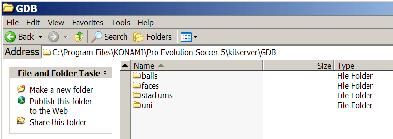Inside the stadiums folder, each stadium has its own folder. For example, you can see 4 stadiums here (the map.txt file will be discussed later):
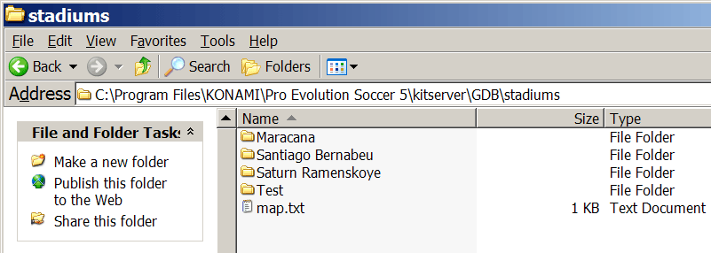
Inside each stadium folder the directory structure is always the same. Each stadium consists of 68 files: 66 files for the stadium itself + 1 adbords textures BIN + 1 information file (info.txt - the year the stadium was built, its capacity and the city are stored in it). The 66 stadium files are split into 6 folders - one each for the following scenarios of stadium usage: fine day, rainy day, snowy day, fine night, rainy night, snowy night. The folders are called: 1_day_fine, 2_day_rain, 3_day_snow, 4_night_fine, 5_night_rain, and 6_night_snow. The adboards textures BIN is stored in a folder called adboards_tex.
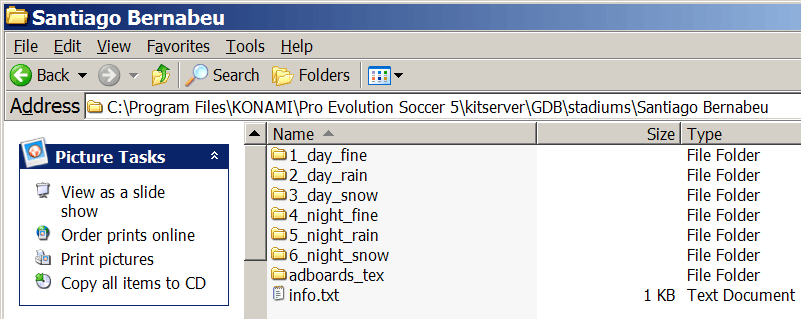The info.txt has a very simple structure. You specify the year the stadium was built, its capacity and the city were it is like in the example below:
# Stadium info file built = 1999 capacity = 16500 city = London
Inside each of the 6 stadium folders, the files have the same fixed names indicating what part of the stadium they contain. (It's important that you name the files in each of the 6 folders, EXACTLY as shown the picture, because otherwise stadium server won't be able to load the stadium correctly). For example, here's the contents of 1_day_fine folder:
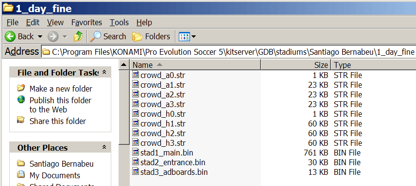Some notes by Gwidon about what each file contains:
| File | Comments |
|---|---|
| crowd_a0.str | away crowd and flags, when there are no away supporters (0-star) |
| crowd_a1.str | away crowd and flags, when stadium has some small number of away supporters (1-star) |
| crowd_a2.str | away crowd and flags for good amount of away supporters (2-star) |
| crowd_a3.str | away crowd and flags for maximum number of away supporters (3-star) |
| crowd_h0.str | home crowd and flags, when there are no home supporters (0-star) |
| crowd_h1.str | home crowd and flags, when stadium has some small number of home supporters (1-star) |
| crowd_h2.str | home crowd and flags for good amount of home supporters (2-star) |
| crowd_h3.str | home crowd and flags for maximum number of home supporters (3-star) |
| stad1_main.bin | Main stadium file, with textures and models |
| stad2_entrance.bin | Entrance scene |
| stad3_adboards.bin | Adboards structure |
The adboards_tex folder for now contains a single file - default.bin, which holds adboards textures to be applied to stadium adboards during the game. (In the future, this folder might contain other texture BINs, so that we can use different adboards during different types of matches... But that's a feature that is not here yet.)
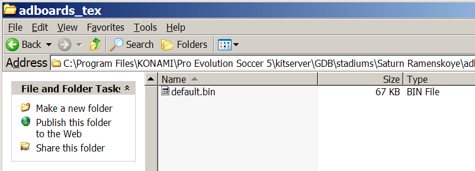
A new tool call which you find in your kitserver folder helps you to import new
stadiums into your GDB. It is much more simple than renaming all files manually. Just
extract all 66 files into a folder named kitserver\stadimp\stadium and copy the adboard
file to kitserver\stadimp\adboards.bin. Then start stadimp.exe. Enter the name of the
stadium and check if the right files are copied. Only the first 66 files are copied, sorted
by their names. For this reason you don't need to care about their extension.
After copying, the program ask you to enter some facts about the stadium which will be saved
to the info.txt. At last you can choose to delete the files inside kitserver\stadimp.
The map.txt in Stadium Server is used slightly differently compared to other modules (such as Kitserver or Ballserver, etc.). To use a GDB stadium in the game, you don't necessarily need the map.txt file. However, what it allows to do, is to define a "home stadium" for a team. Then, whenever the Stadium Server is in the "home team" mode (you can turn it on/off by pressing [7] key), it will determine which team is the home team, and try to load the corresponding stadium from GDB. Here's a simple map.txt, with 2 teams having home stadiums associated with them:
# Stadium Server map file # -------------------------------------------------------------- # This config maps team number into its home stadium folder name # Format:," " # Example: 170,"Santiago Bernabeu" 170,"Santiago Bernabeu" 184,"Saturn Ramenskoye"
During the Strip Selection screen, you will see a text showing the currently selected stadium (or stadium mode), and 4 new hotkeys will be activated: [7],[8],[9],[0]:
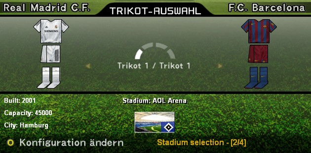
Stadium Server basically has 2 modes of operation, where it will load the stadiums from the GDB: "selected stadium" mode and "home team stadium" mode. Using [9] and [0] keys you can move back and forth among available GDB stadiums. The [8] randomly picks a stadium from the GDB. Pressing [7] key, you alternate between "game choice" and "home team stadium" mode. If "game choice" is selected - the stadium from the AFS is used.
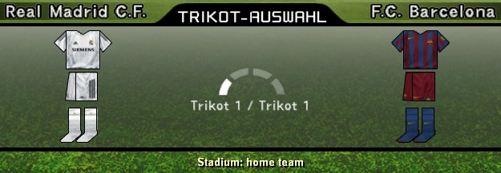You can view all of your GDB stadiums in the "View Stadiums" mode of the game. To do that, simply press the [1] key. To choose the weather, use the [2] key.
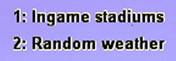KitServer now includes another tool - LOD Mixer - as an integrated module. It allows to do some tweaks to the graphical engine of the game, such as Level-Of-Detail table adjustment, enable the crowd on all cameras, choose weather/stadium/etc. for League/Cup/ML games.
Run lodcfg.exe to configure the LOD Mixer settings. Here's the screenshot of how that looks (very similar to older standalone version of LOD Mixer 1.6):
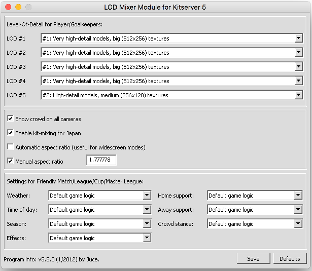From version 5.2.3 you can change some of the lodmixer settings also ingame if you choose the corresponding page in Strip Selection (see instructions here):
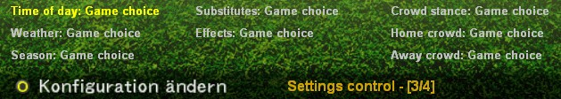The controls are quite simple: With the keys [1] and [2] you choose the setting you want to change. With [+] and [-] you can change the value now. The configuration is saved automatically and also works for friendly matches now.
The idea of Bootserver is similar to Faceserver: you use a map where you assign boot images to playes, using player IDs. This allows to overcome the limitation of 9 slots that the game has for boots - with bootserver, each player can have his own boots. As with faceserver, the bootserver currently doesn't work in Museum Replays, although ingame instant replays, highlights, and other cut-scenes are fully supported.
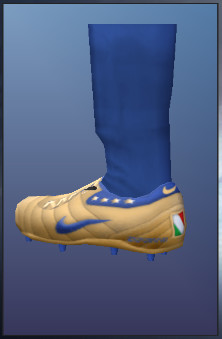Similar to other modules that use map.txt, you put a player ID and the filename
for the boot texture on one line, separating them by a comma. You can find out the ID for
each player in the Edit Mode: the Player ID: text will be displayed at the top of
the screen. Texture filename needs to be a pathname relative to GDB\boots, so you can
organize your boots into subfolders if you want, or just have a flat structure with all boots
placed in the "boots" folder itself. It's up to you.
Here is an example of simple map:
# This file configures the boots of the players # --------------------------------------------- # Format:," " # Example: 205,"puma.png" # More information about player numbers in # the manual 144,"Adidas Predator Absolute BlueSilverLam.png" # Lampard 145,"Adidas Predator Absolute BlackWhiteRed.png" # Gerrard 146,"Adidas Predator Absolute Swerve WhiteBlack.png" # Beckham 302,"Nike AZT IV Supremacy Italy GoldBlue.png" # Cannavaro
Another limitation of bootserver which may confuse people initially: during matches, it doesn't matter which type of boots (1 through 9) the player has assigned - the bootserver will display correct GDB boots. However, in the Edit Mode, the GDB boots will only show, if you set your player's boot type to Type 1.
Bootserver configuration file (bootserv.cfg) contains a setting called random-boots.enabled, which allows to activate random selection of boots for those players, who don't have a GDB boot assigned in map.txt. So say, for example, you have a large collection of boot textures, but you don't fancy writing a long map.txt, specifying boots for hundreds if not thousands of players. Instead you can just assign boots to a limited number of players that you really care about (players of your Master League team, for example) and let bootserver choose the boots randomly for all others. This random choice will occur every match, so it's likely that a player without specific boots assigned in map.txt, will wear very something new every time.
By default, this option is disabled (set to 0). To enable it, just change its value to 1 in bootserv.cfg:
random-boots.enabled = 1
This module allows to organize your BIN-files into folders on disk, instead of inserting them into AFS (*.afs) files, which is sometimes a pain, and may require a lot of extra disk space.
First introduced with Kitserver 7, the AFS2FS proved to be a popular tool, so it made sense to *backport* the functionality into Kitserver 5 also. The basic idea to organize BINs into folders that would mirror the game *.afs files, was brought up by several people in the community, so by now it is really hard to attribute it to someone specific. (Although Str@teG was the one who finally convinced me to implement it). From personal experience, i know that people are sometimes reluctant to install big patches that require an AFS-rebuild, not because it's particularly difficult or anything, but because it can be time-consuming and disk-space-hungry. With afs2fs, this is now very easy: you just put the BIN into correct folder and that's it. And, of course, there are no size constraints - the bins can be as large as needed!
Another useful feature (which is unique to this version to AFS2FS module, and does not exist in kitservers for later versions of the game), is that multiple root folders are supported, which makes it really easy to manage multiple patches: you can install/uninstall them by dragging the folders and/or modifying the afs2fs.cfg configuration file. You can re-order them if needed, in case of the overlap in content. See the section called "AFS root folders" below for more details.
Let's start with the simplest scenario. In kitserver folder, there should be a dat folder - if it's not there, create it, and then inside "dat", create folders, as needed, named - 0_text.afs, 0_sound.afs, e_text.afs, and so for. That's where you're going to be putting the BIN-files.
It's important to name the folders correctly: a folder must have exactly the same name as the corresponding AFS-file. For instance, if you call a folder 0_text, instead of 0_text.afs, things will not work.)
In general, you can name the files whichever way you want, but you must follow one rule: there must be a BIN number in the name, and it must be preceded by an underscore character ('_'). Also, the filenames CANNOT be longer than 63 characters.
Examples of correctly named files:
unknow_00473.bin
ball_7.bin
unknown_8 (.bin extension is optional)
music_10.adx (a file can have a different extension: .adx is typically used for music and sound files)
Examples of incorrectly named files:
unnamed10.bin - no underscore symbol before the BIN number.
face.bin - no BIN number.
By default, the AFS2FS module expects to find the dat folder inside the kitserver folder, which serves as the single default AFS root. However, it is also possible to have a more flexible configuration. In afs2fs.cfg file, you can speficy the location of your root, which can be anywhere on your hard disk. You can also have multiple roots, which is very useful if you have several patches, and you don't want to lose track of which BINs came from which patches (so that you can easily uninstall a patch by just deleting its root folder).
Here is an example afs2fs.cfg file, where 3 different roots are configured:
# AFS2FS configuration afs.root = "c:\mypes5patch" afs.root = "dat" afs.root = "patch-RPL"
The order of them is important only if there is overlapping content. Let's say for example that patch-RPL and mypes5patch both have bin #7 for 0_text.afs. (The files themselves can actually be named differently - for example: ball_7.bin and unknown_7, but what matters is that they define the same BIN). In this case, the file coming from the last root gets used - in this example, it will be the BIN from patch-RPL.
Despite the fact that KONAMI servers were switched off in 2006, there is still a way to play PES5/WE9/WE9LE online aganist other people. Really all credit for that must go to Reddwarf, who first reverse-engineered the protocols and also created the new implementation of the server, he called "GoalServer". (There is now also another implementation of PES5/WE9/WE9LE-compatible server available, called "Fiveserver".)
In order to play on a network server, your game must be configured to communicate with it. For example, it must know the hostname or the IP-address of the main server, and the IP-address of the STUN server. Those settings were hardcoded in the game, but with the help of Network module, it is now very easy to modify them. You put the setting into the configuration file called network.cfg, and the module does the rest.
Here is an example of such file:
# Configuration file for network module network.server = "pesgame.net" network.stun-server = "stunserver.org" network.roster.update = 1 network.roster.update.baseurl = "http://pes5-club.pesgame.net/updates/" network.roster.hash = 1 # set this to 1, if you want to practice or play with # rosters used in network mode. network.option.enabled = 0 # this will make the kitserver cache your login/password # and populate the fields when you connect to the server. # If you do not want this, set the following option to 0. network.remember.login = 1
Two main settings here are network.server and network.stun-server. The first one is the hostname or IP-address of the machine where the game server is running. The second - STUN-server - is used during the network configuration test, which is performed by the game. KONAMI's own STUN servers that the game was configured to connect to are now long gone, so you need to specify a different one. There are quite a few STUN-server available on the Internet that you can use - one of them is shown above.
The Network module also provides a couple of additional features: automatic roster updates and usage of online roster for offline play.
When you play online, it is important that you and your opponent have the exact same game data: teams, player, player attributes, and so on. To ensure that, the game uses a so-called "online roster", which is being checked upon connection to see if two players have identical data. If they do, then the match can proceed, otherwise the game drops the connection, indicating that way that the match isn't possible.
Over the years, tools have been developed to modify the online roster, and sites that run the network servers typically have their version of the roster (with modified teams, players, etc.) that is different from the standard roster. In order to play on such a server, the user previously had to download the roster and install it into its own game either using tools like AFS Explorer and DKZ studio. Now, with Network Module, it's MUCH easier: if the server-hosting site provides the URL for downloading their roster, you can configure the kitserver to always check if the new roster is available and download it if needed upon entering the "NETWORK" mode of the game.
This is exactly what the network.roster.update and network.roster.update.baseurl options are for: the first one enables/disables the automatic downloads, the second one specifies the URL from which to download the updates.
It is important to note that it's the responsibility of the server maintainers to host the files on ther server at the right place. For different versions of the game the files must be accessible over HTTP protocol as:
The contents of the zip-file varies slightly based on the version of the game. For PES5 and WE9, the db.zip should contain a file called db_22.bin, and may also contain: db_17.bin, db_18.bin, and db_19.bin. For WE9LE, the corresponding files are: db_28.bin, db_23.bin, db_24.bin and db_25.bin. (The numbers correspond to the order of BINs in 0_text.afs)
The db.zip may also contain a configuration file called db.cfg, which can specify online-specific gameplay setttings. In the current version of the Network module, the only setting supported is speed.factor. It controls the speed of the game during online play in much the same way as the speeder module does for offline modes. Example of game speed slowed-down a bit (1.0 - is the normal speed):
# Online settings config speed.factor = 0.94
Inside that db.zip file, mentioned in the previous section, the authors and maintainers of the roster may also include a file called option.bin (in addition to other roster files). This file must have the format of the KONAMI-WIN32PES5OPT option file. If you set the network.option.enabled option to 1, then instead of using your normal option (from My Documents/KONAMI/.../save/folder1 folder), the game will be using this downloaded option file. This can be useful, if you want to practice with the teams and players used in online mode.
Some network servers require roster-hash to be passed on during authentication. This prevents cheating and playing with rosters where player skills differ between the two players. (To some extent the game itself does the comparision of rosters, but it is not enforced 100%).
Starting with version 5.3.3, the Network module supports roster-hash calculation and insertion into the login packet. To enable this feature, make sure you have network.roster.hash option set to 1 in your network.cfg:
network.roster.hash = 1
When you connect to a network server, you need to provide 2 things: serial number and password. (If you are connecting to a Fiveserver, then in the Password field, you typically need to enter your login, followed by dash, followed by password). If you do it frequently enough, it does become somewhat annoying... So, there is a new way :)
You can let Kitserver store your serial and password in encrypted form in your Windows registry and let it pre-populate it for you when the Network login screen shows up. Then all you need to do is press [Enter] key and you're done.
The serial and password are stored per network server name in this registry key: HKEY_CURRENT_USER\Software\Kitserver
If you don't like this idea, or simply don't want your credentials cached in registry this way, you can always disable this feature, by modifying network.cfg. Just set this option to 0, like this:
network.remember.login = 0
Not everyone is satisfied with the pace of the gameplay. It must be said that it is not an easy thing to get this aspect of simulating a football match correctly. Many factors are in play, and a lot depends on hardware. Personally, i think Konami did a decent job at that, but many folks find the gameplay too fast.
Several techniques of slowing the game down exist, and not one of them is perfect, but all work to some extent. The speeder module basically slows down the clock, sort of tricking the game into running slower. This is not an ideal solution either, but if a small adjustment is used, it can still look real, play well, and actually provide a smoother gameplay. Don't consider it a silver bullet though. It might work well for you, but it also may not deliver everything you had hoped for :) (One side-effect, for example, is that if you set your match time to 10 minutes, but you have the Game Speed set to 0.9, the actual match time will be approximately 11.1 minutes.)
It is possible to decrease the game speed and also to increase it. The value 1.0 gives the default unchanged speed. Less than 1.0 - slower gameplay, greater than 1.0 - faster gameplay. It is not advised to use values lower than 0.7, because the music/commentary starts to break up. Also values larger than 2.5 are not supported. It is already ridiculously fast with 2.5!.
Example of speeder.cfg file:
# Game speed configuration count.factor = 0.96
Typically, you wouldn't need to modify that, unless you're running into problems, or want to manually enable/disable individual modules. For example, if you wish to use ballserver and lodmixer, but don't really want the kitserver module, you can do that by modifying the kload.cfg file. Here's how the default config looks:
# Loader configuration file debug = 1 gdb.dir = ".\" DLL.num = 16 DLL.0 = "kitserver\zlib1.dll" DLL.1 = "kitserver\libpng13.dll" DLL.2 = "kitserver\kserv.dll" #DLL.2 = "kitserver\kserv-shpal.dll" DLL.3 = "kitserver\bserv.dll" DLL.4 = "kitserver\fserv.dll" DLL.5 = "kitserver\lodmixer.dll" DLL.6 = "kitserver\stadium.dll" DLL.7 = "kitserver\dxtools.dll" DLL.8 = "kitserver\bootserv.dll" DLL.9 = "kitserver\clock.dll" DLL.10 = "kitserver\bzip2.dll" DLL.11 = "kitserver\libarchive2.dll" DLL.12 = "kitserver\libcurl.dll" DLL.13 = "kitserver\network.dll" DLL.14 = "kitserver\speeder.dll" DLL.15 = "kitserver\afs2fs.dll" # DirectX options dx.force-SW-TnL = 0 dx.emulate-HW-TnL = 0 #dx.fullscreen.width = 1280 #dx.fullscreen.height = 800
The top two DLLs - zlib1.dll and libpng13.dll are needed for PNG image support. Do not remove those. There are also some additional dependencies between modules, which makes the order of them important. In particular, afs2fs.dll should be the last one. The network.dll requires bzip2.dll, libarchive2.dll, libcurl.dll to be specified in this order before it.
Aside from these restrictions, you can enable/disable modules any way you wish. To disable a module - for example, fserv.dll - just comment it out with a "#" symbol at the beginning of the line:
DLL.num = 16 ... #DLL.4 = "kitserver\fserv.dll" ...
The dx.force-SW-TnL and dx.emulate-HW-TnL options provide functionality similar to
what 3DAnalyzer does with its "Force SW TnL" and "Emulate HW TnL Caps" settings. If your game
crashes (because of an old graphics card, or some other compatibility issue), and you cannot run
the game with 3DAnalyzer, try these two options - they might be all you need to get the game
working again.
To enable, just change the values from 0 to 1.
The last two options - dx.fullscreen.width and dx.fullscreen.height - can be used to enforce custom resolution in fullscreen mode. Note that those two options are disabled by default; to enable, remove the comment sign ('#') at the begining of those two lines, and make sure you specify resolution that your monitor supports.
Programming: juce, Robbie
Testing: biker_jim_uk, ntalex, Gwidon, nt89, galagan, Vladis LOVE
Stadium Server GDB organization and "home team stadium" idea: Gwidon
Information about stadiums in AFS: nt89
Kits: Spark, kel, qiankun.
Balls: DAMned.
Ball models: Ariel, Gwidon.
Face: Chris79.
"Saturn Ramenskoye" stadium: Asiat
"Santiago Bernabeu" stadium: Gwidon
Kits, balls and ball models all from here: http://www.wevolution.org
Fonts, numbers: original authors unknown. Images taken from this site:
http://www.socsci.umn.edu/~jkoepp/pes5/
and from the game itself.
Documentation:
Russian: TriAn, juce
German: Robbie
English: juce, Robbie
Italian: FabioS
Kitserver and Ballserver use the following open source software:
pngdib by Jason Summers
http://entropymine.com/jason/pngdib/
libpng by Guy Eric Schalnat, Andreas Dilger, Glenn Randers-Pehrson, and others
http://libpng.org/pub/png/libpng.html
zlib by Jean-loup Gailly and Mark Adler, and others
http://www.zlib.net/